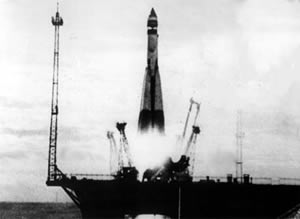
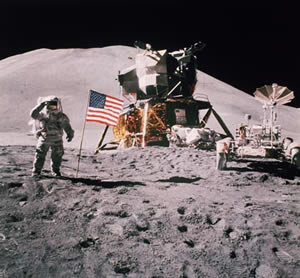

On October 4, 1957 the Soviet Union launched the first earth orbiting satellite to support the scientific research effort undertaken by several nations during the 1957-1958 International Geophysical Year. The Soviets called the satellite "Sputnik" or "fellow traveler" and reported the achievement in a tersely worded press release issued by the official news agency or the USSR.

Eight years of hard work by thousands of Americans came to fruition on July 20, 1969, when Apollo 11 commander Neil Armstrong stepped out of the lunar module and took "one small step" in the Sea of Tranquility, calling it "a giant leap for mankind." Six of the missions -- Apollo's 11, 12, 14, 15, 16 and 17 -- went on to land on the moon, studying soil mechanics, meteoroids, seismic, heat flow, lunar ranging, magnetic fields and solar wind.